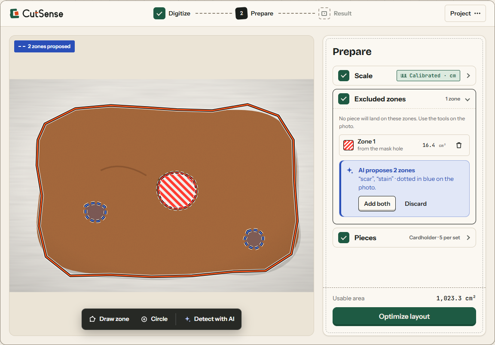
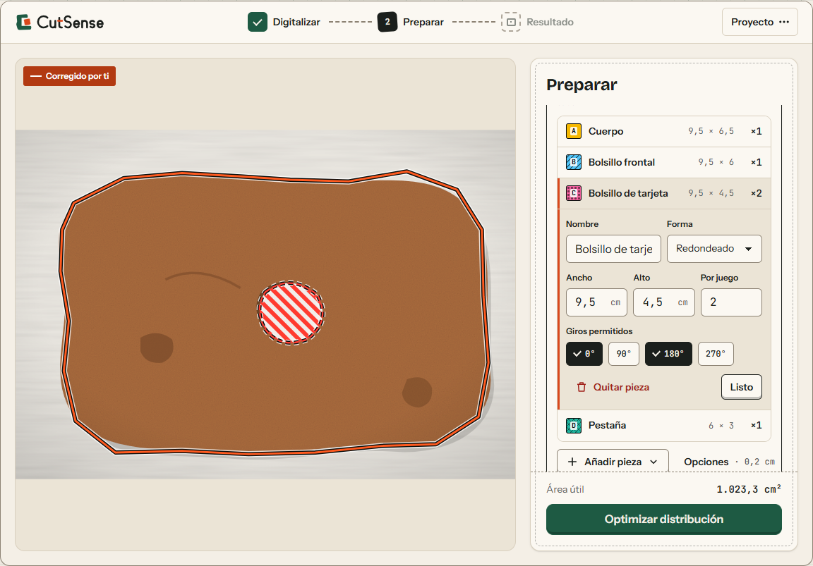
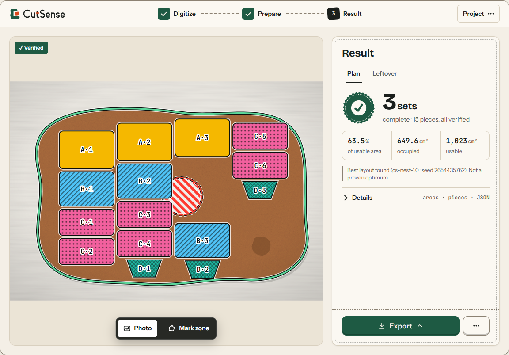
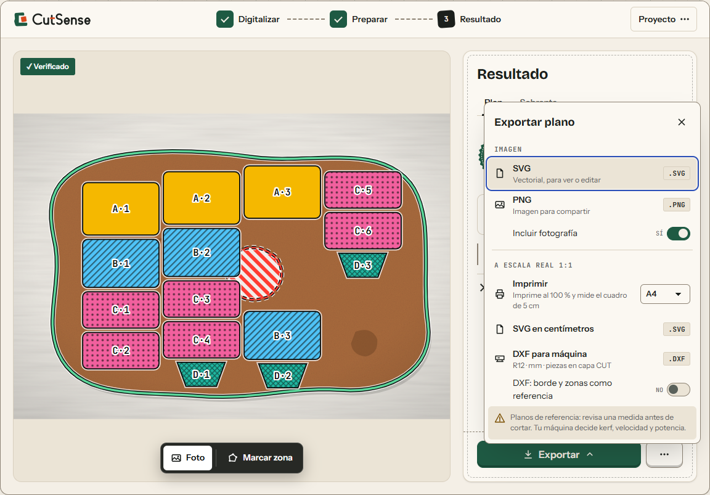
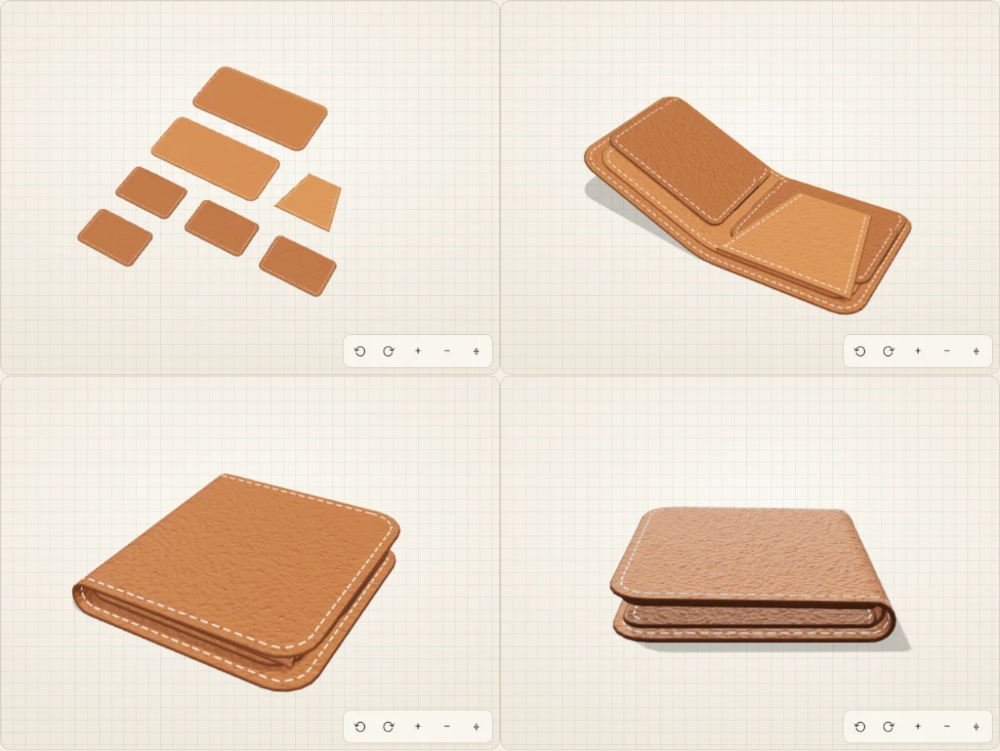
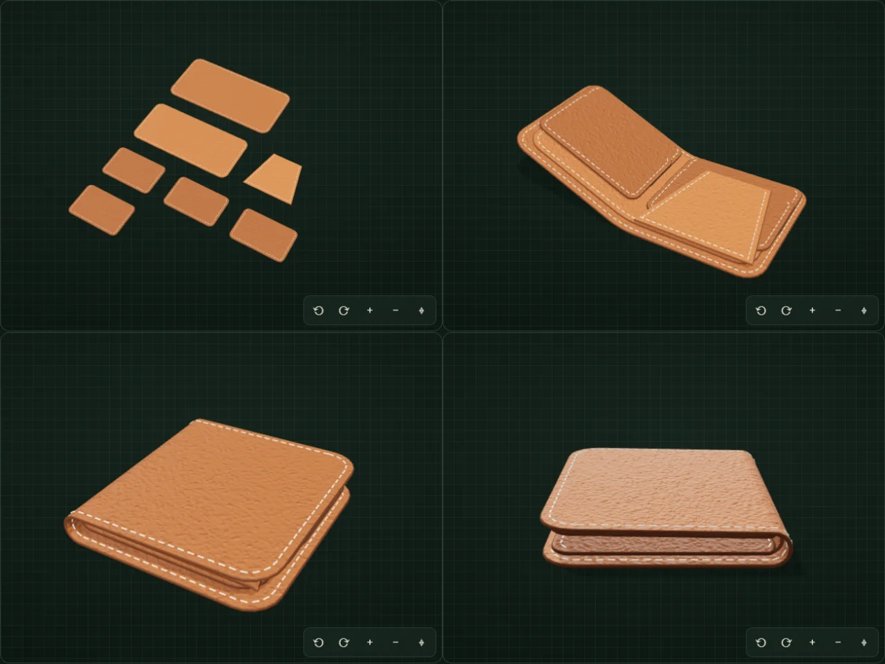

It keeps the leftover in one piece.
When two layouts place the same pieces just as well, CutSense picks the one that leaves the largest single free fragment. Less confetti, more material.
Sense of the cut
Photograph a scrap of leather, felt, foam or cardboard. AI proposes the outline, you correct it, and an independent geometric check verifies every cutting plan before you see it. Then what is left becomes your next piece of material.
JPG, PNG or WebP · up to 10 MB · flat material, contrasting background, even light, overhead camera
01 How it works
Five steps at the bench. Each one tells you who did the work: the AI proposes, you correct, the engine computes, geometry verifies, and you decide.
Lay the offcut flat on a contrasting background and shoot from above. SAM 3.1 proposes the edge as a dashed line, and holes as zones to avoid. Accept it, move any point, or trace it by hand. No AI available? Outline by contrast instead.


Mark scars, stains and holes so no piece lands on them, or ask SAM to look for them and keep only what is right. Then calibrate with a length you know, such as a bank card (8.56 cm), to work in real centimetres.


Pick a kit (leather cardholder, bifold wallet), single pieces (keychains, coasters, bookmarks), shapes you draw or import, or pieces designed with Hilo. In Complete sets mode, CutSense looks for as many complete sets as fit. Partial sets never count.


A deterministic engine places the pieces. Then a separate verifier checks the whole plan: no overlaps, nothing outside the material, nothing on a defect, the spacing you asked for. Only a plan that passes is shown.


Save the plan as SVG or PNG, print it at 1:1 across A4 or Letter sheets, or export SVG in centimetres and DXF for a cutter. Then plan the next product on what is left.


02 The leftover loop
A plan is not the end of an offcut. Plan another product on what is left, or photograph the real remnant after cutting, and start again. A second life for every offcut, and sometimes a third.
Illustration in three stages. First life: a leather offcut with the seven pieces of a bifold wallet; the largest free area on the right is outlined in green. Second life: that area, turned on its side, becomes the material for four coasters; the free area at one end is outlined. Third life: that last area becomes the material for four keychains. All three are drawn at the same scale, so each generation is visibly smaller.
When two layouts place the same pieces just as well, CutSense picks the one that leaves the largest single free fragment. Less confetti, more material.
Pick a kit or a single piece and the quantity you want. It is planned around the pieces already placed, and the combined plan is verified again as a whole.
After cutting, take a photo of what is really left. A new project starts from it and keeps your pieces, so the next plan follows the real edge.
03 Why you can trust the plan
AI proposes, deterministic code places and verifies, and you decide. Before a plan reaches your screen, a second, independent check measures it again.
No overlaps
No two pieces share any material.
Nothing outside the material
Every piece sits fully inside the outline you approved.
Nothing on a defect
No piece touches a zone you marked as excluded.
The spacing you asked for
Measured edge to edge, between pieces and to the edge of the material.
Occupied area, usable area, pieces placed and what did not fit are recomputed from the final shapes, not copied from the search.
Every plan carries its seed and optimizer version (cs-nest-1.1). Download the problem and solution as JSON: the same input and seed give the same plan.
The search is fast and bounded. Its plan is checked, not proven to be the optimum, and the screen says so. Change anything afterwards and the plan is marked out of date.
04 Hilo, the AI pattern maker
Describe what you want to make, in words or with a sketch. Hilo asks one question at a time and proposes flat pieces with sizes in centimetres. Nothing is applied until you approve it, and then the pieces are placed and verified like any kit.
I want a small bifold wallet for cards and a few notes.
HiloA bifold wallet, then. How many card slots do you need?
Approving needs a photo calibrated in cm. Your messages and sketches are sent to the AI model through our server, which keeps nothing.


05 Exports
Print the pieces at real size on the paper you already have, or send a DXF to a cutter. Every file is made in your browser from the verified plan.
Marked cm exports need a photo calibrated in cm or mm.
Reference drawings. Check one measurement before cutting. Accuracy depends on the calibration and a photo taken from straight above; your machine decides kerf, speed and power.
06 Examples
Two sample offcuts, labelled as examples. They go through the same steps as your own photo.
A concave edge, a hole and a stain, all visible. A good first run: outline, mark the flaws, then choose your pieces.
Saved outline · relative units until you calibrate
Set up for a bifold wallet, so you can go straight to a verified plan and see how many complete wallets fit.
Assumed scale · 14 px = 1 cm · bifold wallet kit
07 Good to know
What CutSense does, what it does not, and where your photo goes.
No, and we do not pretend it is. A bounded search finds a good layout in a few seconds, and the verifier checks that it is valid. Every plan carries its seed and optimizer version, so you can reproduce it.
Only after you calibrate, with the material's real width or two points on a known length. Until then sizes are relative units, and both the screen and the exported files say so. A photo taken from straight above gives the most accurate scale.
When you use the AI outline, the photo is sent through our server to the segmentation service (SAM 3.1). The CutSense server stores nothing. Projects stay in your browser and in files you choose to save. A saved project contains your photo, so treat it as private.
No account. Without AI you can still outline by contrast or trace by hand, mark zones yourself, use the built-in kits and try the examples. The app tells you plainly when AI did not run.
Flat sheets you cut by hand or by machine, such as leather, felt, foam and cardboard. Photograph one sheet at a time, flat, on a background that contrasts with it, in even light. Pieces turn in steps of 90°.
It can help. Ask SAM to look for short phrases such as "scar, stain, hole": it proposes zones, and nothing becomes an excluded zone until you accept it. You can always draw zones by hand.
The plan is marked out of date and cannot be exported until you optimize again, so you never cut from a layout that no longer matches your material.